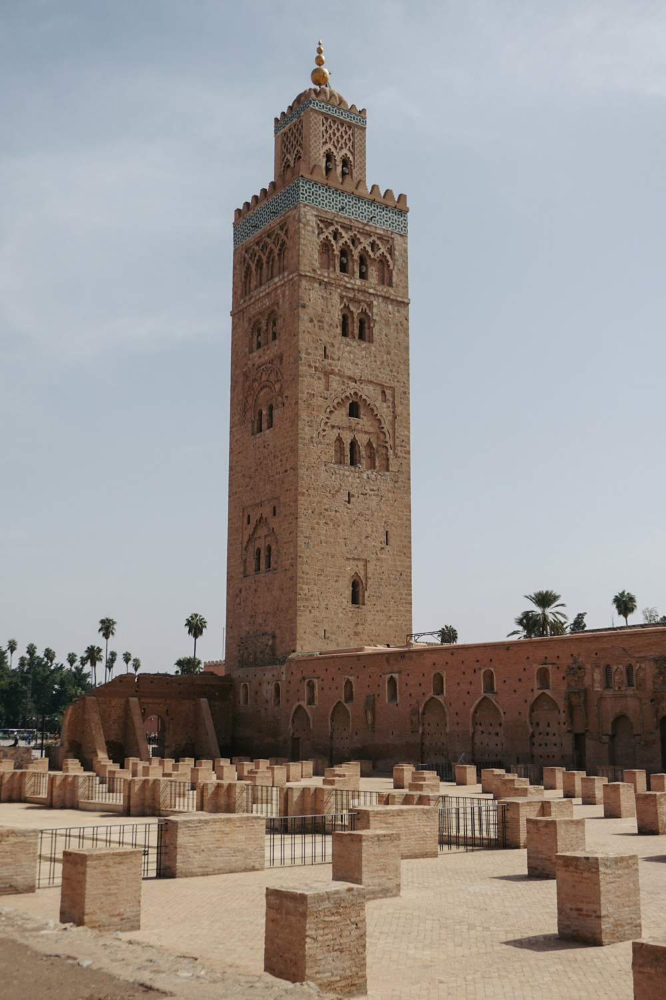

Dentro Marrakech
Tempo per la città, le sue strade e i mercati, seguendo un percorso da definire insieme.

CLICK&VIAGGIA / MAROCCO
Marrakech, le sue atmosfere e un mondo di dettagli da osservare. Un percorso che mette al centro la curiosità e il piacere della scoperta.
L’ESPERIENZA
Il Marocco invita a prestare attenzione: alle architetture, ai colori, al ritmo delle strade. Marrakech è il punto di partenza di una proposta che lascia spazio alla città e a ciò che la rende riconoscibile.
Il viaggio proposto alterna giornate urbane e una possibile esplorazione dei dintorni, da definire con il team. Un’occasione per costruire un’esperienza personale, con il tempo giusto per osservare, conoscere e ritrovare il gusto della partenza.
IL FILO DEL VIAGGIO
Questa è una traccia illustrativa: date, servizi e organizzazione saranno definiti prima di confermare il viaggio. Le fotografie raccontano la destinazione e non identificano servizi inclusi.
Tempo per la città, le sue strade e i mercati, seguendo un percorso da definire insieme.
Una possibile escursione nei dintorni, scelta in base a interessi, periodo e organizzazione.
L’ultima giornata chiude il percorso e lascia spazio ai ricordi da portare a casa.
PARLIAMO DELLA TUA PROSSIMA PARTENZA
Raccontaci cosa cerchi, con chi vorresti partire e quali momenti vuoi vivere.
Un appuntamento con il team è il primo passo per valutare il percorso e le possibilità disponibili.
Un incontro informativo, prima di qualsiasi decisione.